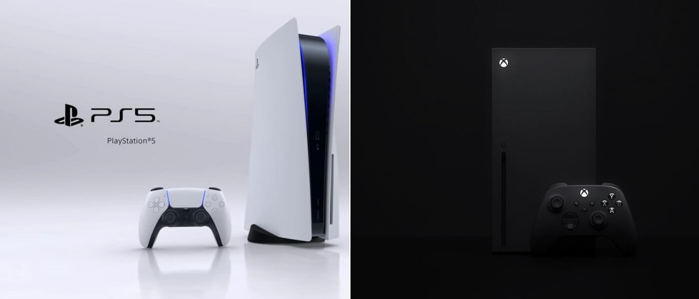
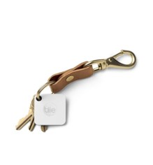
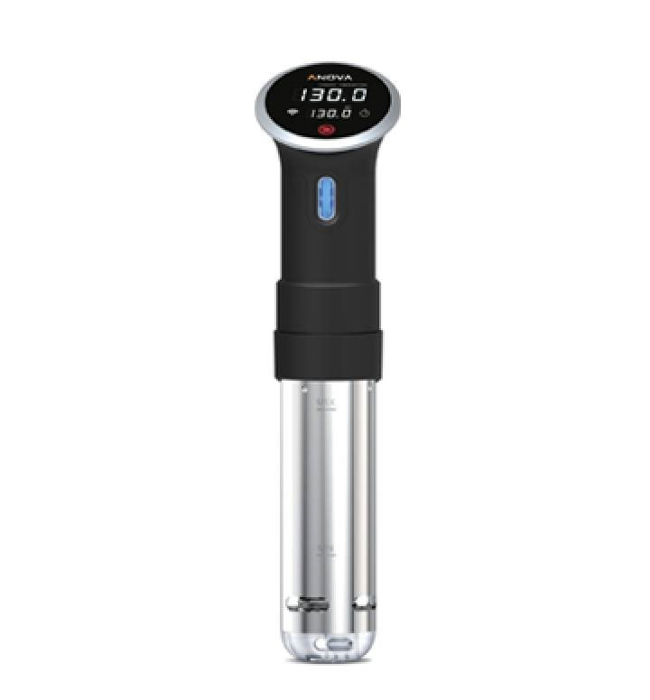
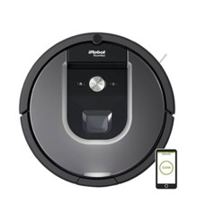

PlayStation 5 contra Xbox Series X
El 2020 va a ser un año de gran relevancia en el sector de los videojuegos, puesto
que veremos toda una nueva generación de consolas. La que seguramente se lleve todo
el protagonismo será la nueva PlayStation 5, que se lanzará durante las Navidades
de 2020, como han adelantado desde la compañía.
Aún quedan muchas incógnitas sobre esta nueva consola, pero poco a poco hemos ido
conociendo pinceladas de boca del propio CEO de Sony, Jim Ryan. Según éste, una de
las principales innovaciones reside en la renovación del mando de la PS5. El
controlador contará con retroalimentación háptica, una tecnología que nos permitirá
disfrutar de una gran variedad de sensaciones en las manos mientras jugamos.
La Xbox Series X cuenta con un diseño curioso, que recuerda más a la CPU de un ordenador de
sobremesa que a una consola de videojuegos, un detalle que conjunta a la perfección con su
estilo. No olvidemos que las Xbox siempre se desarrollan pensando en muchos más usos que
jugar, he ahí la gran diferencia con PlayStation.
La consola de Microsoft llegará también a finales de 2020 y no nos extrañaría que fuera la
más potente hasta la fecha. Seas de PlayStation o Xbox, seguro que ya sabes qué pedir para
las Navidades de 2020.

Tile Mate, rastreador Bluetooth
Alberto Marcos, Business Development Manager en Europa de Zero Latency Zero Latency es
la empresa pionera y líder en juego de realidad virtual que permite libertad de movimientos
en un espacio de juego de gran tamaño y para varios jugadores simultáneamente. Alberto
Marcos es uno de los responsables de desarrollo de negocio de la startup. Tile Mate,
rastreador Bluetooth para no perder tus bienes más preciados.
Este diminuto dispositivo te permite tener localizado en todo momento tus objetos
imprescindibles como la cartera o el móvil: “Es muy útil para viajeros, dado que
nos permite tener localizado el equipaje en todo momento. También sirve para llaves”,
comenta Marcos. Tile es un dispositivo tan delgado como dos tarjetas de crédito, que
cabe dentro de una cartera, un bolso o el bolsillo.

Annova precision cooker
Mario Jiménez y Carlos Hergueta, directores de PR Garage Lo de tener mayordomos como el
que aparecía en El hombre bicentenario aún deberá esperar. Sin embargo, podemos consolarnos
con algunas propuestas de aparatos domésticos que se conectan a la red y que, incluso, pueden
operar de forma autónoma. Para ello, nos ayudan Mario Jiménez y Carlos Hergueta, los dos
socios directores de PR Garage, una agencia de comunicación y marketing tecnológica
especializada en startups.
Dispositivo que te permite vivir en el año 3000 a los amantes de la cocina, según Jiménez.
Apareció hace un par de años para convertirse en el primer útil para cocinar al vacío a un
coste asequible y con una técnica antes reservada a las cocinas profesionales. “Te ayuda a
conseguir resultados casi profesionales como el mínimo esfuerzo. Lo puedes poner en marcha
desde el trabajo y tener una cena perfecta al llegar a casa. Alucinante”, asegura.

IRobot Roomba 960
Noelia Amoedo, socia fundadora de Mediasmart
Mediasmart se presenta como la primera compañía tecnológica 100% española centrada en la
optimización de resultados en publicidad display en telefonía móvil.
Noelia Amodeo es su socia fundadora, además de haber participado en puestos de dirección
en HP y Buengiorno.
iRobot Roomba 960, un robot de limpieza avanzado
Los fabricantes del famoso Roomba incorporan un potente sistema de limpieza con sensores
inteligentes que le permiten desplazarse sin problemas por el hogar y adaptarse a su
entorno para aspirar a fondo los suelos.
“En mi caso, que paso mucho tiempo fuera, me permite tener la casa siempre limpia cuando
llego de la oficina o cuando vuelvo de un viaje. El sistema de programación que tiene es
comodísimo e infalible”.